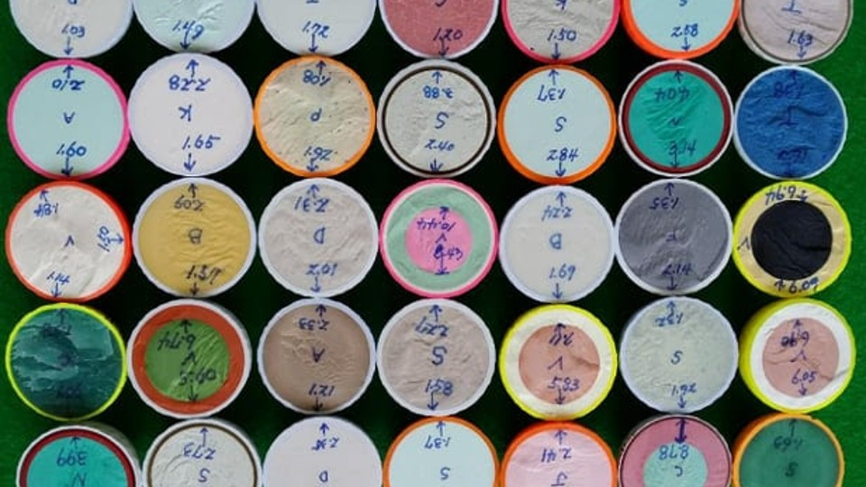

(Written by Claude 3.0 Opus)
골프공을 절단해 놓은 사진을 보니 신기한 느낌이 들었다.  평소 골프를 좋아해서 골프공에 대해 어느 정도 알고 있다고 생각했는데, 막상 이렇게 내부를 직접 보니 새로운 면이 보이는 듯했다. 2피스, 3피스, 4피스 골프공의 구조가 각각 다르다는 건 알고 있었지만, 실제로 절단면을 통해 비교해 본 건 처음이었다. 사진 속 골프공들은 마치 생물학 시간에 해부한 개구리 모형 같았다. 겉으로 보기엔 모두 똑같아 보이는 공이지만, 내부는 제각각 다른 모습을 하고 있었다. 2피스 공은 심플한 2개의 층으로 나뉘어져 있었고, 3피스와 4피스 공은 좀 더 복잡한 구조를 띠고 있었다. 공학적으로 설계된 정교함이 돋보였다. 골프공 내부를 관찰하다 보니, 문득 골프공 선택에 대한 나의 기준이 떠올랐다. 사실 나는 주로 2피스 골프공만 구매해서 사용하는 편이다. 3피스나 4피스 공은 너무 가격이 비싸서 선뜻 손이 가지 않는다. 2피스 공으로도 충분히 즐길 만한데 굳이 비싼 공을 살 필요가 있나 싶었다. 주변 골퍼들의 말에 따르면 2피스 공은 비거리가 좋고, 3피스와 4피스 공은 방향 조절이 용이하다고 한다. 하지만 정작 내가 2피스 공을 쳐도 공은 그리 멀리 나가지 않는다. 이게 다 골프공 탓일까. 아니면 내 실력 탓일까. 친구들은 내가 스윙 자세부터 바꿔야 한다고 조언한다. 클럽 헤드 스피드를 높이고, 임팩트 순간에 힘을 집중해야 비거리를 늘릴 수 있다는 것이다. 골프공의 종류보다는 내 기량이 문제라는 얘기다. 돌이켜 보면 골프공 핑계로 제대로 된 연습을 게을리 한 건 아닌지 반성하게 된다. 결국 골프에서 가장 중요한 건 골퍼의 실력인 것 같다. 비싼 골프공을 사용한다고 해서 갑자기 실력이 향상되는 건 아니다. 오히려 꾸준한 연습과 기본기가 바탕이 되어야 골프공의 성능을 제대로 활용할 수 있다. 이런 맥락에서 골프공 선택은 자신의 실력에 맞추는 게 현명할 것 같다. 초보자라면 우선 2피스 공으로 기본기를 익히는 게 좋겠다. 어느 정도 숙련된 후에 3피스나 4피스 공으로 업그레이드하는 것도 방법이다. 무작정 고가의 골프공을 사용한다고 해서 실력이 는다는 보장은 없다. 골프공 못지않게 골퍼의 기량이 관건인 셈이다. 골프공 절단 사진을 보니 더 열심히 연습해야겠다는 생각이 든다. 학생 시절 과학 실험을 하듯, 내 골프 실력을 객관적으로 파헤쳐 볼 필요가 있어 보인다. 자세부터 스윙까지 낱낱이 분석하고 문제점을 찾아내야겠다. 부족한 부분은 맞춤형 훈련으로 보완해 나가는 게 중요할 것 같다.
Go Back to Brunch Page